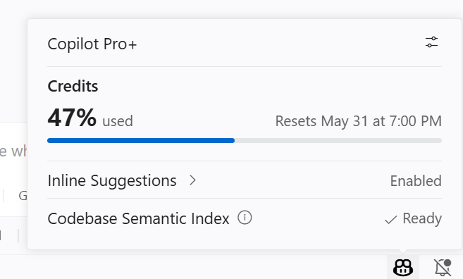
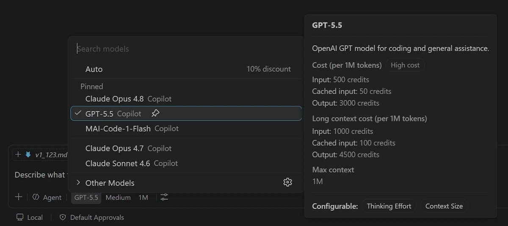
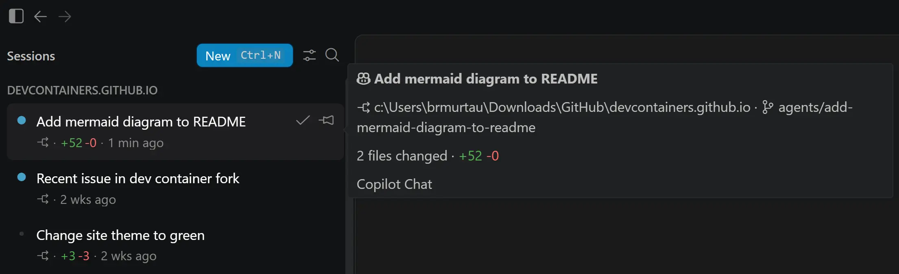

Visual Studio Code 1.122
_发布日期：2026 年 5 月 28 日_
更新 1.122.1：此更新解决了这些问题。
欢迎来到 Visual Studio Code 1.122 版本。此版本进一步增强了智能体体验，使 BYOK 更加灵活，同时新增了在不同设备上测试 Web 应用的能力。
- 更大的上下文窗口：支持 Anthropic 和 OpenAI 模型的 1M 上下文窗口。
- 离线 BYOK：即使在没有网络连接的情况下，也能使用你自己的语言模型。
- 浏览器设备模拟：直接在集成浏览器中测试网站在不同设备上的响应式表现。
- 丰富的问题报告：创建包含截图和视频录制的详细 VS Code 问题报告。
祝编码愉快！
GitHub Copilot 转向按用量计费
GitHub Copilot 已转向按用量计费。
在新模式下，每次交互会消耗 AI 积分，积分根据 token（输入、输出和缓存）成本和所使用的模型计算。复杂的交互和更强大的模型会消耗更多积分，而轻量级模型和简单任务消耗的积分更少。了解更多关于如何优化使用量的信息。
更新后的 Copilot 状态仪表板
Copilot 状态仪表板现在反映了按用量计费模式。你可以查看 AI 积分消耗情况，以便随时了解使用量。

模型选择器中的模型费用
模型选择器现在显示费用信息，帮助你做出明智的模型选择。不同模型在不同 token 类型上有不同的费用，因此为任务选择合适的模型有助于延长你的使用量。

你可以在语言模型编辑器中查看所有可用模型、其能力、上下文大小和计费详情。从模型选择器中选择 ⚙️ 打开，或在命令面板中运行聊天：管理语言模型命令。
智能体
智能体窗口（预览版）
智能体窗口是一个专用的配套窗口，针对探索、迭代和审查跨项目、工具链和机器的智能体会话进行了优化。我们持续改进它，此版本的更新包括：
- 会话悬停详情：在会话列表中悬停在会话上即可查看其详细信息。悬停显示会显示会话标题，带有指示所使用工具链的图标，以及项目、工作树和已更改的文件。
- 本地 VS Code 工具链（仅限 Insiders）：我们正在持续迭代在智能体窗口中使用本地工具链的能力，例如改进了自定义智能体选择器。本地工具链的可用性是一项早期实验功能，仅在 VS Code Insiders 中可用。要试用它，你可以在 Insiders 中启用
setting(sessions.chat.localAgent.enabled)设置。

你可以通过多种方式打开智能体窗口，包括在 VS Code 标题栏中的在智能体中打开按钮。要了解其工作原理以及你可以用它做什么，请访问智能体窗口文档。你还可以查看我们最新的 VS Code Insiders 播客节目，了解智能体窗口如何融入智能体优先的开发工作流。
你的反馈对于塑造智能体功能非常有帮助。如果你已经在使用并提供反馈，非常感谢！请继续在 GitHub 上提交问题或浏览现有问题。
更丰富的智能体 OpenTelemetry 信号
本地智能体会话现在向 OpenTelemetry 发送规范的 github.copilot.* 属性命名空间，与 GitHub Copilot CLI OpenTelemetry 约定保持一致。新信号为每个会话添加了仓库上下文、智能体类型、结构化的工具参数和钩子结果。
有关完整的属性参考，请参阅使用 OpenTelemetry 监控智能体使用情况。
沙盒
设置：setting(chat.agent.sandbox.enabled)
以前，当你使用绕过审批或自动驾驶模式运行命令时，它们会先在沙盒中尝试。如果命令以非零退出代码失败，则会自动在沙盒外重试。由于审批已被绕过，这并没有提供有意义的安全好处，反而可能使行为更难理解。
根据 Insiders 用户的反馈，终端沙盒现在仅适用于你使用默认审批模式时，在这种情况下它可以在安全性和实用性之间提供更清晰的平衡。
语言模型
Anthropic 和 OpenAI 模型的 1M 上下文窗口
VS Code 现在为兼容的 Anthropic 和 OpenAI 模型支持 100 万 token 上下文窗口。这个扩展的上下文窗口使你能够处理显著更大的代码库和更长的对话，而不会丢失重要的上下文。扩展的上下文窗口在使用支持的模型（如 Claude Opus 4.7 和 GPT-5.5）时可用。
注意：更大的上下文窗口每次交互可能消耗更多的 token，这会在按用量计费下增加 AI 积分使用量。
无需 GitHub 登录即可使用 BYOK
以前，在 VS Code 中使用你自己的语言模型 API 密钥需要登录 GitHub。现在，自带密钥（BYOK）无需登录即可使用，因此你可以在无法登录 GitHub 的离线或受限环境中使用聊天、工具和 MCP 服务器。这也支持使用 Ollama 等本地模型的完全离线工作流。
要开始使用，请从命令面板运行管理语言模型，并添加一个提供商，如 Anthropic、Azure、Gemini、OpenAI、Ollama、OpenRouter 或自定义端点。一旦至少配置了一个 BYOK 模型，聊天视图将变为可用，且登录提示将被抑制。
内置工具和任何已配置的 MCP 服务器继续工作。请求将直接发送到你的提供商。
注意：内联建议和下一个编辑建议（NES）仍需要 GitHub 登录。BYOK 仅为聊天、工具和 MCP 服务器提供支持。
实用模型通知
设置：setting(chat.utilityModel)、setting(chat.utilitySmallModel)
VS Code 中的一些流程，如聊天标题生成、提交消息生成和反馈，使用较小的实用模型，该模型通常来自你的 Copilot 订阅。当你在未登录状态下使用 BYOK 时，默认的实用模型无法访问，因此聊天输入中会弹出一条通知，提示你将其指向你的某个 BYOK 模型。
你有两个选择：
- 选择配置打开设置，为
setting(chat.utilityModel)和setting(chat.utilitySmallModel)选择一个 BYOK 模型。这将使用你自己的语言模型解锁完整的 AI 功能集。 - 如果你只需要使用聊天，可以关闭通知。实用驱动的功能将保持不活动状态，直到你配置模型为止。
配置两个实用设置、登录 GitHub 或移除所有 BYOK 模型后，通知将自动隐藏。
自定义端点提供商已在稳定版中可用
自定义端点提供商使你能够连接实现 Chat Completions、Responses 或 Messages API 的模型，以便你可以使用自己的端点和 API 密钥进行聊天。你可以使用它连接到自托管、企业或其他兼容的 AI 端点。
自定义端点提供商现已在 VS Code 稳定版中可用。
要了解如何进行设置，请参阅添加自定义端点模型。
在智能体窗口中管理模型
你现在可以直接从智能体窗口运行聊天：管理语言模型命令，以配置在工作时要使用的语言模型。
要使用 BYOK 模型，你必须使用本地智能体提供商，该功能在 VS Code Insiders 中通过 setting(sessions.chat.localAgent.enabled) 启用。模型配置与编辑器窗口共享，因此在任一位置所做的更改会在两处同时反映。
在管理语言模型中进行细粒度的 BYOK 提供商组操作
管理 BYOK 提供商通常意味着进行小更新，例如轮换 API 密钥或重命名提供商组，而无需手动打开和编辑完整的 JSON 配置。
在语言模型编辑器中，支持的提供商组现在根据提供商架构提供针对性的操作：更新 API 密钥、添加模型、重命名组和删除。这使得常见的提供商维护任务更加快捷，同时保持在同一工作流中。
远程开发
远程开发扩展，允许你将 Dev Container、通过 SSH 或远程隧道连接的远程计算机，或 Windows Subsystem for Linux（WSL）用作全功能开发环境。
亮点包括：
- 32 位 ARM Linux 主机的生命周期结束
你可以在远程开发发布说明中了解有关这些功能的更多信息。
集成浏览器
浏览器设备模拟
集成浏览器现在包含开箱即用的设备模拟支持，包括屏幕尺寸、移动/触摸模拟、自定义用户代理等。这对 Web 开发和调试特别有用，使你可以直接从 VS Code 快速测试网站在不同设备上的响应能力和行为，无需切换到单独的浏览器或使用外部工具。
要从浏览器选项卡开始，请从溢出菜单中选择显示模拟工具栏命令。
智能体还可以通过 Playwright 代码触发设备模拟，例如用于发现移动响应性问题：
将浏览器截图添加为聊天上下文
新的将截图添加到聊天功能使你可以将当前浏览器视口的截图作为上下文附加到聊天中。这对于 UI 相关的任务特别有用，例如调试布局问题。
编辑器体验
改进的问题报告流程
设置：setting(issueReporter.wizard.enabled)
为了帮助我们更好地理解和修复你在 VS Code 中可能遇到的任何问题，我们通过新的问题报告向导改进了问题报告流程。该向导引导你直接从 VS Code 创建高质量的问题报告，包括添加相关详情、截图和视频录制。
启用 setting(issueReporter.wizard.enabled) 设置以选择加入新的问题报告器。
弃用的功能和设置
此版本中的新弃用
即将到来的弃用
值得关注的修复
致谢
对问题跟踪的贡献：
- @gjsjohnmurray (John Murray)
- @RedCMD (RedCMD)
- @IllusionMH (Andrii Dieiev)
- @albertosantini (Alberto Santini)
对 vscode 的贡献：
- @aaronpowell (Aaron Powell)：为插件市场添加市场引用支持 PR #317901
- @dgercho (David Gerschcovsky)：启用对源树中已更改文件的搜索结果筛选 PR #314790
- @oded-ist (Oded S)：修复 read_cell_output 错误地将所有输出报告为过大的问题 PR #318148
- @PenguinDOOM (Penguin)：修复 BYOK 无效状态标记重试 PR #317292
- @SLdragon (rentu)：feat: 为 nes/inline 补全提供商添加 languageDiagnosticsService 选项 PR #317678
我们非常感谢人们在新功能准备就绪后立即尝试，因此请经常回来查看并了解最新动态。
>如果你想阅读以前 VS Code 版本的发布说明，请访问 code.visualstudio.com 上的更新。